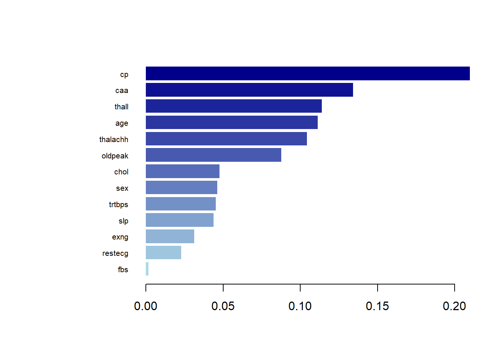
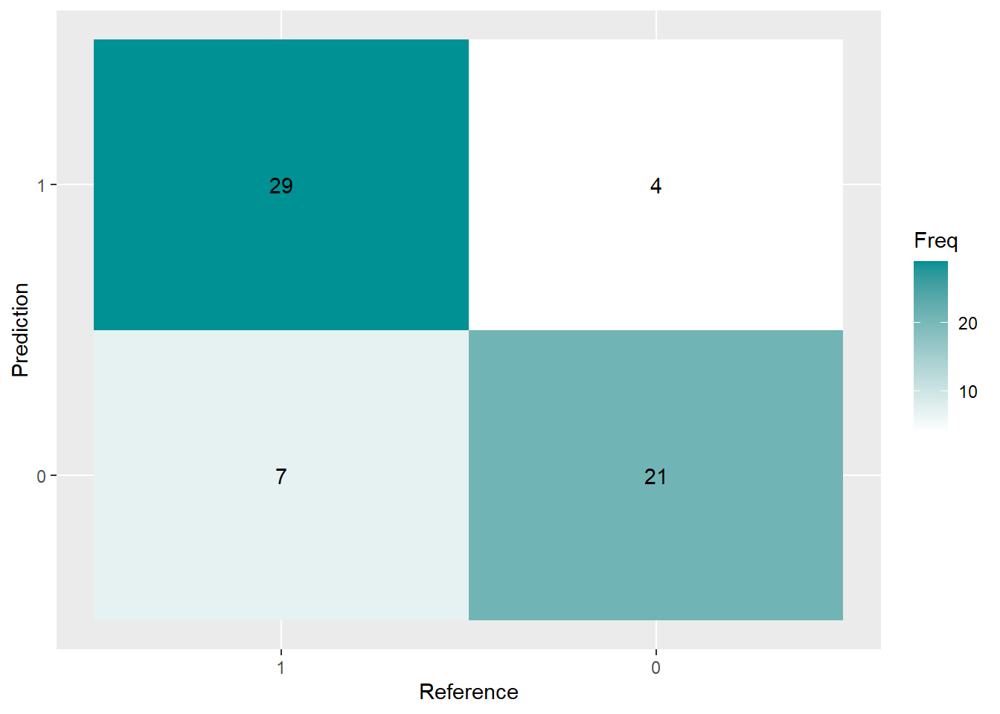

#Load neccessary libraries and the dataset
library(xgboost)
library(rsample)
library(caret)
library(dplyr)
setwd("C:/Users/molat/OneDrive/Documents/GitHub/vignette-binary-logistic-regression")
load("data/heart.rda")Vignette: Heart Attack Prediction
Predictive Modeling for Heart Disease
The research aims to develop accurate and efficient models to aid in early detection and intervention strategies for improved patient outcomes.
The predictive models, XGBoost and Support Vector Machine (SVM), were selected for their capabilities in handling complex dataset and their potential in accurately identifying heart disease.
XGBoost Model
heart$cp <- as.factor(heart$cp)
heart$fbs <- as.factor(heart$fbs)
heart$restecg <- as.factor(heart$restecg)
heart$exng <- as.factor(heart$exng)
heart$caa <- as.factor(heart$caa)
heart$thall <- as.factor(heart$thall)
heart$sex <- as.factor(heart$sex)
heart$slp <- as.factor(heart$slp)XGBoost require numerical input for modeling. Converting categorical variables to factors ensures that these variables are encoded as numerical values that the algorithm can process.
Splitting the Data into Training and Testing Sets:
set.seed(3435)
heart_split <- initial_split(heart, strata = output, prop = 0.8)
heart_train <- training(heart_split)
heart_test <- testing(heart_split)
train_x <- data.matrix(heart_train[, -14])
train_y <- heart_train[,14]
test_x = data.matrix(heart_test[, -14])
test_y = heart_test[, 14]Using initial_split() from the rsample package to divide the dataset into training (80%) and testing (20%) sets. This ensures a balanced distribution of classes (stratified by the output variable). Partition of the data is performed randomly, so for reproduction purposes, we need to set seed for this process where set.seed() needs to be executed with the splitting code at the same time.
We also separate the labels and the features to be used in the prediction task in a later stage.
Converting Train and Test into xgb.DMatrix Format:
xgb_train = xgb.DMatrix(data = train_x, label = train_y)
xgb_test = xgb.DMatrix(data = test_x, label = test_y)XGBoost package allows us to group the data into a Dmatrix which can be directly inputted into the training process.
Using Cross-Validation to Find Optimal Number of Iterations:
param_list = list(
booster = 'gbtree',
objective = "binary:logistic",
eta = 0.01,
gamma = 1,
max_depth = 6,
subsample = 0.8,
colsample_bytree = 0.5
)
xgbcv = xgb.cv(params = param_list,
data = xgb_train,
nrounds = 500,
nfold = 5,
print_every_n = 10,
early_stopping_rounds = 30,
maximize = F)[1] train-logloss:0.688564+0.000426 test-logloss:0.689515+0.000561
Multiple eval metrics are present. Will use test_logloss for early stopping.
Will train until test_logloss hasn't improved in 30 rounds.
[11] train-logloss:0.648138+0.001078 test-logloss:0.658526+0.004514
[21] train-logloss:0.610766+0.002526 test-logloss:0.631012+0.006679
[31] train-logloss:0.578854+0.003268 test-logloss:0.606494+0.009006
[41] train-logloss:0.549389+0.003430 test-logloss:0.586075+0.012526
[51] train-logloss:0.522625+0.004828 test-logloss:0.567163+0.013922
[61] train-logloss:0.498105+0.005012 test-logloss:0.549929+0.016585
[71] train-logloss:0.476419+0.005898 test-logloss:0.535235+0.018305
[81] train-logloss:0.456599+0.006501 test-logloss:0.523482+0.021385
[91] train-logloss:0.438357+0.007138 test-logloss:0.512039+0.023235
[101] train-logloss:0.421719+0.007344 test-logloss:0.502315+0.025389
[111] train-logloss:0.406298+0.007288 test-logloss:0.491765+0.027420
[121] train-logloss:0.391657+0.007397 test-logloss:0.482773+0.029852
[131] train-logloss:0.378376+0.007311 test-logloss:0.474975+0.032544
[141] train-logloss:0.365791+0.007221 test-logloss:0.467746+0.034402
[151] train-logloss:0.354776+0.007276 test-logloss:0.461383+0.035851
[161] train-logloss:0.344038+0.007812 test-logloss:0.456333+0.036779
[171] train-logloss:0.333738+0.008243 test-logloss:0.450981+0.037934
[181] train-logloss:0.324473+0.008308 test-logloss:0.446279+0.039781
[191] train-logloss:0.315785+0.008455 test-logloss:0.441533+0.041116
[201] train-logloss:0.307572+0.008816 test-logloss:0.438042+0.041893
[211] train-logloss:0.300071+0.008539 test-logloss:0.434093+0.042469
[221] train-logloss:0.292937+0.008815 test-logloss:0.430843+0.043856
[231] train-logloss:0.286446+0.008670 test-logloss:0.426982+0.045112
[241] train-logloss:0.280190+0.008491 test-logloss:0.424449+0.046175
[251] train-logloss:0.274173+0.008745 test-logloss:0.422769+0.047761
[261] train-logloss:0.268692+0.008867 test-logloss:0.422121+0.049315
[271] train-logloss:0.263047+0.008900 test-logloss:0.420513+0.050418
[281] train-logloss:0.257830+0.009068 test-logloss:0.418697+0.051613
[291] train-logloss:0.252876+0.009051 test-logloss:0.417511+0.052773
[301] train-logloss:0.248177+0.009133 test-logloss:0.416981+0.054025
[311] train-logloss:0.243779+0.009136 test-logloss:0.416120+0.054782
[321] train-logloss:0.239715+0.009434 test-logloss:0.414492+0.055642
[331] train-logloss:0.236096+0.009485 test-logloss:0.414123+0.056500
[341] train-logloss:0.232629+0.009694 test-logloss:0.413265+0.057653
[351] train-logloss:0.229003+0.010415 test-logloss:0.413096+0.058524
[361] train-logloss:0.225511+0.010329 test-logloss:0.412857+0.059878
[371] train-logloss:0.222205+0.010346 test-logloss:0.413070+0.060805
[381] train-logloss:0.219459+0.010446 test-logloss:0.413479+0.062556
Stopping. Best iteration:
[354] train-logloss:0.227869+0.010424 test-logloss:0.412709+0.058639The function sgb.cv can take in various parameters, which is explained in the following section:
•booster: It specifies the type of booster to use. ‘gbtree’ indicates that the booster is a tree-based model using gradient boosting.
•objective: ‘binary:logistic’ implies the selected type of loss function for binary classification, which minimizes the logistic loss for binary outcomes.
•eta: It controls the step size shrinkage used in updating weights during the boosting process.
•gamma: It represents the minimum loss reduction required to make a further partition on a leaf node of the tree. A higher gamma value leads to a more conservative model by preventing overfitting.
•max_depth: This parameter determines the maximum depth of each tree in the boosting process. Higher values allow the model to capture more complex relationships but may lead to overfitting if not controlled properly.
•subsample: It defines the fraction of samples to be used for training each tree.
•colsample_bytree: This parameter denotes the fraction of features (columns) to be randomly sampled for each tree. A value of 0.5 implies that only 50% of the features will be considered for splitting at each node.
Using xgb.cv() to perform k-fold cross-validation (nfold = 5) on the training data (xgb_train) to determine the optimal number of boosting rounds (nrounds) while avoiding overfitting. Early stopping is implemented (early_stopping_rounds) to halt training if no improvement occurs (when the train loss and test loss does not have significant decrease).
The best iteration is 452 in this case.
Using the Best Iteration Round to Perform Model Training:
set.seed(3435)
final.m = xgb.train(params = param_list, data = xgb_train, nrounds = 425, verbose = 0)
var_imp = xgb.importance(
feature_names = setdiff(names(train),
c("output")),
model = final.m)
blue_palette <- colorRampPalette(c("lightblue", "darkblue"))(length(heart) -1)
xgb.plot.importance(var_imp, col = blue_palette)
After training XGBoost model at nrounds = 425, we calculate the importance score for each features and plot it. In XGBoost models, feature importance scores indicate the relative importance of each input feature (or predictor variable) in contributing to the model’s predictive performance. From the importance plot we can see that “cp” which stands for the chest pain type receives the highest importance score.
Prediction and Visualization:
set.seed(3435)
predictions <- predict(final.m, newdata = test_x)
predictions <- as.numeric(predictions > 0.5)
conf_matrix <- confusionMatrix(as.factor(predictions), as.factor(test_y))
conf_matrixConfusion Matrix and Statistics
Reference
Prediction 0 1
0 21 4
1 7 29
Accuracy : 0.8197
95% CI : (0.7002, 0.9064)
No Information Rate : 0.541
P-Value [Acc > NIR] : 4.82e-06
Kappa : 0.6339
Mcnemar's Test P-Value : 0.5465
Sensitivity : 0.7500
Specificity : 0.8788
Pos Pred Value : 0.8400
Neg Pred Value : 0.8056
Prevalence : 0.4590
Detection Rate : 0.3443
Detection Prevalence : 0.4098
Balanced Accuracy : 0.8144
'Positive' Class : 0
testframe <- as.data.frame(conf_matrix$table)
testframe$Prediction <- factor(testframe$Prediction, levels=rev(levels(testframe$Prediction)))Make predictions on the test data. The threshold of 0.5 is applied to convert probabilities to binary predictions, and the model generates a confusion matrix using the predicted values and actual test labels. A confusion matrix allows us to see how many predictions the models make correct or wrong. The function confusionMatrix() also gives us the ensitivity and Specificity automatically. Then, convert the confusion matrix to a data frame for visualizations and rearrange the levels of the Prediction variable to ensure correct plotting order.
ggplot(testframe, aes(Prediction,Reference, fill= Freq)) +
geom_tile() + geom_text(aes(label=Freq)) +
scale_fill_gradient(low="white", high="#009194") +
labs(x = "Reference",y = "Prediction")
Finally, plot the confusion matrix to display the frequency of correct and incorrect predictions with gradient colors representing frequency levels.